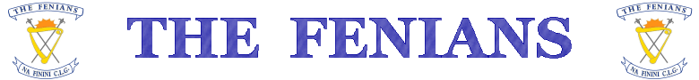
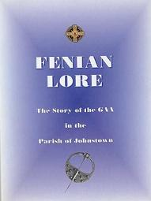

Club Profile
Management of the Club
Club History
The Founding of the Fenians
Instant Success
The Fenians Glory Years of the 1970s
The 1980s
The Near Success of the '90s
Recent Times
Famous Fenians
Fenians Football
Playing Field
Fenians Crest
Fenian Lore
Thanks to all involved and all the best in the coming year.
From the early 1900s through to the formation of the Fenians in 1968, Johnstown had been home to many different teams, joining forces with neighbouring areas such as Beggar, Galmoy, Urlingford and Tullaroan. This came to an end with the parish rule of 1954, forcing teams to form within their own parishes alone.
After getting knocked out of the Junior County Championship by Coon in 1967, Johnstown split into two teams; St. Kierans and St. Finbarrs. However, at U-21 level, the two clubs remained playing together, and it was ultimately the success of this U-21 team that brought the two clubs together once again. Boasting players such as PJ Ryan, Shem Delaney, Diarmuid and Paddy Broderick, Fergus Farrell, Martin Fitzpatrick and Mick Garrett, this team beat Coon to win the 1967 North Final. This achievement bode well, should St. Kierans and St. Finbarrs re-unite at senior level, and this prompted the two clubs to join forces as The Fenians, on March 16th 1968.
The Fenians won their first county title on Easter Sunday 1969, which was the final of the delayed 1968 championship. The Fenians team that beat Glenmore that day, included seven members of the U-21 team, which signaled possible success for the club in the years that were to follow. In their first year senior, the Fenians reached the county final, only to be beaten by a stronger James Stephens side. The wait for such success at the senior grade would be short-lived however. This was only the calm before the storm!
The Fenians Glory Years of the 1970s
The Fenians won their first senior county title in the 1970 final, enacting revenge on James Stephens
for their victory over the Fenians the previous year. The Fenians won the game on a scoreline of 2-11
to 3-5. The team that brought the very first senior county title to the club was:
PJ Ryan, Shem Delaney, Nicky Orr, Martin Fitzpatrick, Pat Murphy, Pat Henderson, Seamus Grace, Mick
Garrett, Donal Walsh, Johnny Moriarty, Pat Delaney, Paddy Broderick, Dicky Dowling, Tommy O'Connell,
Willie Watson.
Subs: Fergus Farrell for Willie Watson, Frank Holohan for Dickie Dowling.
Their triumph in 1970 was the beginning of a decade of glory for the Fenians. The club contested a total of eight senior Finals between 1969 and 1978, winning five. After losing to Bennetsbridge in the 1971 final, the Fenians embarked on a historic three-in-a-row of county titles in 1972, '73 and '74. The emergence of Ger Henderson and Billy Fitzpatrick - the latter hitting a hat-trick of goals in the '73 final - to an already team of stalwarts lead the club to this great achievement, which to this day is unrivalled within the county in the post-parish-rule era.
Continuing from their County Final triumph in 1974, the Fenians went on to be the first ever Kilkenny club to win a Leinster title, beating St. Rynaghs of Offaly. Second half goals from Paddy Fitzpatrick and Mick Garrett proved decisive on the day. Ardrahan of Ballinasloe were the Fenians' opponents in the semi-final, where the Fenians won on a scoreline of 2-13 to 1-8, with Billy Fitzpatrick equaling the Ardrahan total to score 1-8 himself on the day. And so, the Fenians were through to the All-Ireland Club Final, going down in history as the first Kilkenny club to do so.
On March 16th 1975, the Fenians lined out against St. Finbarrs of Cork in the All-Ireland Final, but
were to lose 3-8 to 1-6. Special praise on the day was reserved for the performance of the Fenians
full-back line of Shem Delaney, Nicky Orr and Martin Fitzpatrick. The team in full was:
PJ Ryan, Shem Delaney, Nicky Orr, Martin Fitzpatrick, Gerry Murphy, Pat Henderson, Ger Henderson,
Frankie Hawkes, Mick Garrett, Johnny Moriarty, Pat Delaney, Joe Ryan, Billy Fitzpatrick, Willie
Watson, Paddy Fitzpatrick.
Subs: Pat Murphy, Paddy Broderick, JJ Tobin and Eugene Grehan also played important roles in that
championship run.
The club went on to contest three more county finals in 1977, '78 and '81, winning the 1977 encounter with Rower-Inistiogue. Just nine years after the club had been formed, the Fenians had won five county senior titles. They were truly the lords of the game in Kilkenny at the time, and it was this sudden rise to greatness that had many hurling followers throughout the county referring to the club as the Fighting Fenians!
The success of the Fenians throughout the 70s is an act that any club would find hard to follow, and
although the '80s saw the Fenians go through a bit of a grey patch, the period was certainly not void
of success. 1981 saw the senior team reach another county final, only to lose to James Stephens. In
1980, the club won it's first special junior title, beating Rower-Inistioge after a last-minute goal
by Gerry Garrett. The team that day was:
Jimmy Tobin, Seamus Behan, Shem Delaney, Dan Hughes, Martin O'Gorman, John Ryan, Seán Behan,
Jim Power, Eamonn Hughes, Johnny Moriarty, Paddy Broderick, Jerry Murphy, Gerry Garrett, Billy Watson,
Eamon Holohan.
Subs: Canice O'Gorman for Seán Behan.
The club also won the Roinn B U-21 Championship in 1987, again beating Rower-Inistioge, but only after two replays! In 1988, the minor team won the Roinn A league and championship double, and the following year, the club won another prestigious double, winning both the U-16 A and the minor A championships. This was the club's first ever success at the U-16 Roinn A grade. The teams that contested these county finals included some great hurlers the likes of Mick Phelan, James Carroll, Gerry Quinlan, Jimmy Brennan, Matty Walsh, Stephen Grehen, Brian Ryan, Anthony McEvoy and PJ Delaney, that were to form the basis of a team that would contest many senior finals in the '90s.
The '90s saw the Fenians reach three senior county finals, and the semi-finals in almost every other year, but yet, a county title proved elusive. The first success the club had that decade was when the special juniors were crowned league champions in 1991. The same team then went on to reach the league final the following year, and win the county final, beating Ballyhale 5-7 to 1-11.
The Fenians seniors reached both the league and championship finals in 1993. They won the former,
beating Erin's Own by a goal, but lost the latter by the same margin, to Dicksboro after a replay.
This is the team that won the league final that year:
Alan Behan, Gerry Quinlan, Ger Henderson, John Henderson, Anthony McEvoy, Pat McCormack, Willie
Dollard, Ger Brennan, Stephen Grehan, PJ Delaney, John Delaney, Jimmy Brennan, Mick Phelan, Billie
Purcell, Brendan Ryan.
Subs: Liam McEvoy, James Carroll, Brian Ryan, PJ Ryan, Finbar Delaney, Billy Dermody, Seamus
Behan, Thomas Walsh, Billy Fitzpatrick.
Three All-Ireland medals graced Johnstown that same year, courtesy of PJ Delaney, Brian Ryan and Matty Walsh. The U-16 team also reached both the league and championship finals that year but were unfortunate to lose both.
In 1995, the Fenians reached five different county finals, including the senior final. Unfortunately,
the minors were the only team to enjoy success that year. Despite being four points ahead at the
break, the seniors ended up losing the county final to Glenmore on a scoreline of 3-19 to 1-14.
The minors beat Tullaroan in the Northern Final to set up a meeting with John Lockes of Callan in the
final. The game was to go right down to the wire and was decided when PJ Ryan pointed a 65 in injury
time. The team that beat John Lockes was:
Michael Glendon, Martin Quinlan, Jody Delaney, Robert Tobin, Brian Power, PJ Ryan, Jason Ryan,
Eoin Behan, Paul Cashman, Kevin Power, Podge Delaney, Declan Garrett, Lar Ryan, Willie Cleary, Ger
Behan.
Subs: George Holmes, Jim Broderick, Kenneth Murphy, Noel O'Loughlin, Aidan Butler, Brendan
Carroll, Frankie Hawkes, Joe Bowe.
The special juniors were one of the other teams to contest a county final that year. The Fenians seemed to be on their way to the title before the game had to be abandoned, and Carrickshock then went on to win the replay. The U-16s also reached the county final, only to be beaten by a Ballyhale Shamrocks team that included Henry Shefflin, which had also beaten the Fenians in the league semi-final.
The success of the U-16s and minors in previous years lead to a strong U-21 panel, when the Fenians won the Roinn B championship in 1997, beating Pilltown in the final on the Sunday before Christmas.
The Fenians seniors beat Glenmore in the county semi-final replay, two years later in 1999, winning only by a solitary point. However, Graigue-Ballycallan, who were unbeaten all year, were to prove too much in the county final, and went on to win their first ever county senior title.
The Fenians began the new millennium fighting off relegation from the senior grade in 2000 and 2001. Some assurance was provided when they reached the final of the O'Byrne Cup in 2001. The minors fared better however, winning their first silverware since 1995 when they beat Lisdowney in the league final after a replay. The juveniles also won the Roinn D county final for the first time in 18 years. On the football front, the Fenians stormed to their first success since the '70s, when they won the North Junior Final, beating Barrow Rangers on a scoreline of 2-11 to 0-3.
2002 saw the Fenians seniors reaching the semi final in both the league and championship, but ended up losing both, to Tullaroan and O'Loughlin Gaels respectively. Success at the juvenile level continued however when they won the Paddy Lawlor Camáint tournament. In 2003, the Fenians minors, who at the time had merged with Galmoy, won the league final. The club also entered a team in the U-15 11-a-side tournament, and reached the county final. JJ Delaney, Stephen Grehen and PJ Ryan all won All-Ireland medals with the Kilkenny seniors that year. In the process, JJ made his mark on the intercounty scene, winning the Hurler of the Year award after a series of sublime performances in the black and amber!
The U-14s went unbeaten in the league in 2005 until they lost by a solitary point to Thomastown in the league final. At the senior grade, the Fenians were battling relegation once again in 2005, but beat Glenmore in the relegation final to confirm their place as the longest serving club in the senior grade, hurling consistently at that level for the past 27 years. No other club currently hurling the senior grade in Kilkenny can boast of such an achievement. This victory saw the team turn a corner of sorts when they swapped relegation battles for a place in the league final and the championship semi-final the following year in 2006. They won all but one game en route to the league final, but unfortunately lost the league final to Ballyhale Shamrocks, who would eventually go on to win the All-Ireland club championship. After a hard-fought draw in the county championship semi-final, the Fenians eventually lost the replay to Dunamaggin, but the future is looking bright for a young Fenians side, and who knows what success 2007 will bring.
2006 also saw the juniors, minors and U-21 play out some thrilling matches, the juniors reaching the league semi final. The Fenians experienced rare joy at the U-21 grade when they beat Emeralds and Ballyragget on their way to the North Final, only to be beaten by Freshford. With all but only four members of that panel underage again this coming year, the future is looking bright. The minors emulated the U-21s when they too reached the North final as well as the league semi-final.
Finally, 2006 also brought some intercounty success to the club when JJ Delaney, PJ Ryan and PJ Delaney all won senior All-Ireland medals with Kilkenny. John Broderick also won an All-Ireland with the Kilkenny U-21s. Hopefully, the remaining years of this decade will see similar success at intercounty level and even more importantly, success at club level! No bother to us!
There can be no doubt that some great men have donned the Fenians jersey down through the years, and each one deserves credit. However, there have been a few who have stood out from the pack and have gone on to glory with the county teams down through the years. The Kilkenny Team of the Century, voted on in 2000, is proof of this with no fewer than six Fenians getting nominated for places on the team: Ger Henderson, Nicky Orr, John Henderson, Pat Delaney, Billy Fitzpatrick and Pat Henderson, with the last two men winning places on the team itself. Each of the above were also nominated for places on the All-Stars All-Stars team, with Ger Henderson winning a place on the team proper.
Pat Henderson was the first Fenian to be associated with the Kilkenny senior team, coming onto the intercounty scene in 1964. The same man was to go onto great success with the county team both as a player and a coach. In fact, he still remains one of the most successful coaches ever in the game, leading Kilkenny to the best part of 20 titles at different levels, including the double double of the senior League and Championship in 1982 and 1983.
Pat Henderson made his senior intercounty debut in 1969, but hot on his heels was Pat Delaney. Between them, they acted as the pathfinders for future Fenian glory at intercounty level. Pat Delaney captained Kilkenny to Leinster glory in 1973. One of the many reasons Delaney holds down his place in hurling history is that it was he who introduced the Delaney Bounce, a skill that is to this day used by the game's best players at all levels - tapping the sliotar off the ground while charging through a ruck of opponents.
To date, the only two clubmen to captain Kilkenny to All-Ireland glory are Nicky Orr in 1974 and Billy Fitzpatrick in 1975. Nicky Orr was the first man from the club to captain an All-Ireland winning Kilkenny team in 1974. One of the best full-backs in the game, Nicky was known not for what he did on the field but rather for what his man didn't do! Meanwhile, Billy was one of the most stylish hurlers in the business and possibly his crowning glory came when he shot ten points in the 1983 All-Ireland.
Throughout the 1980s, two more Hendersons landed on the intercounty scene. Ger and John Henderson epitomized the never-say-die spirit that had been associated with the Fighting Fenians down through the years.
There have also been many intercounty representatives from the club in the past, including Paddy
Broderick and Martin Fitzpatrick. The following is a list of Fenian men who hold senior intercounty
All-Ireland medals:
Pat Delaney, PJ Ryan Snr., Billy Fitzpatrick, Pat Henderson, Billy Purcell, Ger Henderson, John Henderson, Nicky Orr, Shem Delaney, PJ Delaney, Matty Walsh, Brian Ryan, Stephen Grehan, JJ Delaney, PJ Ryan Jnr., PJ Delaney
And not forgetting those from the parish with minor All-Ireland medals:
Pat Henderson, Willy Watson, Pat Delaney, John Ryan, Ger Henderson, Billy Fitzpatrick, John Henderson, Joe Ryan, PJ Delaney, James Carroll, Keith Behan, Brian Ryan
While the parish of Johnstown might not be seen as a football stronghold, it has had its share of the
spoils in the sport also. Before the parish rule, Johnstown and Beggar played football together in the
1950s under the name St. Kierans, and won the junior county title in 1952. Twenty years later, the
Fenians brought a second junior football title to the parish, beating Slieverue in the county final on
2nd April 1972. The game finished 0-15 to 1-3. The team that day that brought the Fenians their first
county football title was:
PJ Ryan, Nicky Orr, Ray Farrell, Owen Behan, Seamus Grace, Pat Henderson, Dickie Dowling, Pat
Murphy, Mick Garrett, Paddy Broderick, Pat Delaney, Jim Maher, Shem Delaney, Paddy Fitzpatrick, Willie
Watson.
In more recent times, the Fenians were crowned North Junior Football Champions in 2001, when they
beat Barrow Rangers on a scoreline of 2-11 to 0-3, only to lose to Mooncoin in the county final.
Over the years, the Johnstown hurling teams played and trained in many different fields, including Bowe's field behind the church, Ryan's field down by the Canal Road, Broderick's field, Fogart's field and Curran's field, beside the current playing field. The primary field for over two centuries though was Dwan's field in Ballyspellan. Even after the current field was opened, Dwan's field continued to act as the primary playing field in the parish for many years.
The current field originally formed the 9th hole of a 9-hole golf course, but when the Healy Estate was divided in 1936, it was handed over to the parish as a sports field. It was officially opened on May 26th 1938, with two matches: Johnstown 1 vs Rathdowney and Johnstown 2 vs Clomantagh. Even still, Dwan's field remained the primary sports field until development of the current field began in the 1980s, with Seamus Grace as chairman of the club. Since then, it has taken the mantle from Dwan's field and has accommodated hurlers and footballers of all ages. Dressing rooms were built in 1991, and a car park was added in 1998. In the past year, work has begun to extend both the dressing rooms and car park, so it looks as if the current field is here to stay, and all going well it will breed many successful Fenians teams of the future.
The Fenians crest embodies both the local history and the history of the Fenian warriors of old. The Fenian warriors introduced a weapon known as the pike, of which there are two in the crest. The rising sun refers to the Fenian Rising. Finally, the harp is reference to another rising of sorts. For many years, any literature printed in this country would include a stamp that contained a harp with the crown above it, which symbolised Brittish control on the land. However, the local printers here in this proud parish was the first printers in Ireland to print literature that contained the harp alone, without the crown.
For a more comprehensive history of the Fenians GAA Club, you are advised to refer to a copy of Fenian Lore. Hundreds of copies of this book were printed not so long ago, and it contains information not only on the Fenians Sports Club, but on the history of GAA in the parish long before the founding of the Fenians, as far back as the 1800s. Certainly worth a read!
